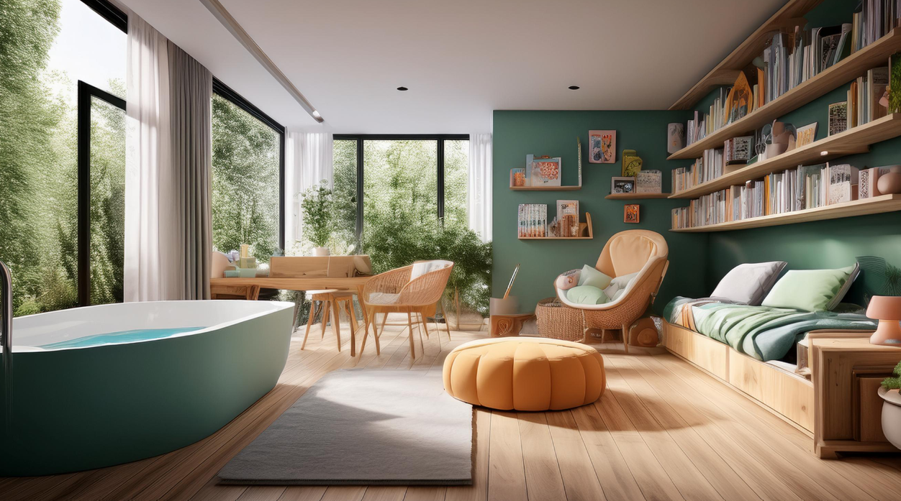
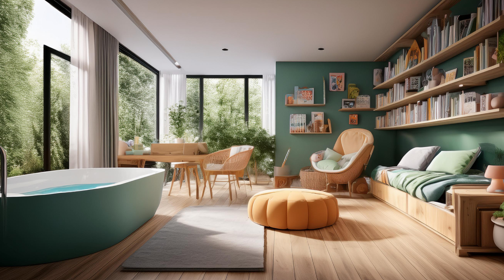

It's glass walls and doors you can enjoy the beatiful view of your backyard.
The media room where you can read all of your books or go on your laptop at the table.
When there is fire, the house can dectect very easily and make a sound and voice. When the fire gets worst, it can automatically and easily call 9-1-1.
And the sound room can play all of your favorite tunes. Just connect it with your voice and shoutout the name of the song and artist on any room you like! It can also dectect any sound like if someone is breaking thru the backyard or frontyard and they make any noise, it can make an alarm and sounds to scare them away. And the music room has all the instruments you can play (and one of the most normal looking rooms compare to the others you already seen). Piano, violin, and guitar."


The fire place is, well, a fire place. You know, you can warm yourself there. I'm pretty sure everyone knows what a fire place is. Moving along.
There is a automatic poetry reader that can read any book you have and want. Just give it to this big guy and it'll will read anything for you. You can tell them to pause reading or if you wanna come back again sometime, just tell them to save.
The sound room can play all of your favorite tunes. Just connect it with your voice and shoutout the name of the song and artist on any room you like! It can also dectect any sound like if someone is breaking thru the backyard or frontyard and they make any noise, it can make an alarm and sounds to scare them away.
The chair room is where you can sit down and relax and listen to relax tunes with headphones and it can even rub your back and sholders.